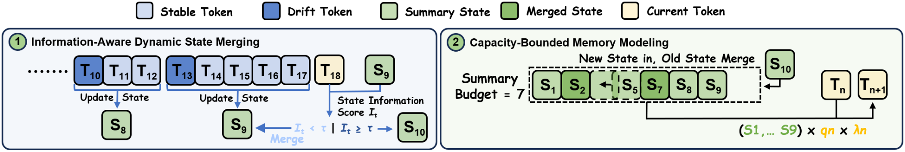
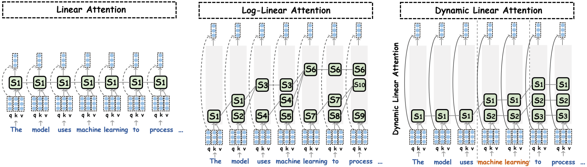
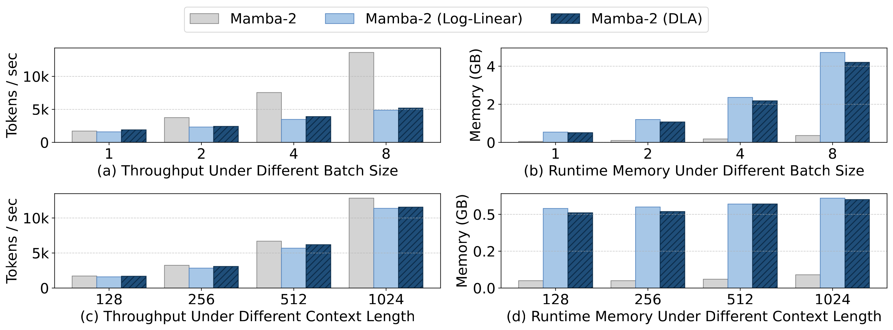

Dynamic Linear Attention：让多状态线性注意力"按信息量"动态分配内存
引言 · 核心问题
标准 Transformer 的自注意力对序列长度 $T$ 是 $O(T^2)$ 复杂度，长上下文下计算与显存都难以承受。线性注意力（Linear Attention）通过去掉 softmax 归一化、利用结合律重排计算，把复杂度降到次二次，是长序列建模的热门方向。但纯线性注意力把整段历史压进单个状态矩阵，表达力在长上下文下受限。
为提升表达力，近期工作转向多状态（multi-state）组织：把历史切成若干块、各自汇总成一个紧凑的记忆状态。代表作 Log-Linear Attention 用 Fenwick 树把前缀分解成对数个多尺度状态，近处细、远处粗。然而——
这种失配带来两个致命问题：① 无法适应突发的语义转折——重要 token 仅因为"到了预设边界"就被过早吸收进粗粒度摘要；② 合并不可逆——一旦异质 token 被压进同一个状态，其各自贡献再也无法恢复，误差沿长序列累积放大。
本文提出 Dynamic Linear Attention（DLA），一个面向多状态线性注意力的动态内存建模框架，核心是让"何时开新状态、何时合并"由 token 级别的信息变化量来决定，而非固定时刻表。
三个主要发现：(1) DLA 在全部任务上一致超过 SOTA 多状态方法 Log-Linear Attention；(2) 用在 Mamba-2 上时，DLA 变体甚至追平了同等参数规模的 full-attention Transformer；(3) DLA 比 Log-Linear 吞吐更高、运行时显存更低。
背景：从线性注意力到多状态
标准自注意力 $O=\mathrm{softmax}(QK^\top\odot M)V$（$M$ 为因果掩码），复杂度 $O(T^2)$。线性注意力去掉 softmax，写成并行式 $O=(QK^\top\odot M)V$，并等价于一个循环式：维护单个状态矩阵 $S_t\in\mathbb{R}^{d\times d}$ 汇总全部历史：
这带来线性时间推理 + 常数显存，但把整段历史压成一个状态，长上下文表达力受限。DeltaNet 进一步引入 delta 规则做"可控遗忘"：$S_t = S_{t-1}(I-\beta_t k_t k_t^\top)+v_t k_t^\top$，其中 $\beta_t$ 是数据相关的步长——提升了适应性，但仍是单一全局状态，无法在长序列上选择性保留细粒度信息。
多状态线性注意力与 Log-Linear
多状态方法把历史切段、各段汇总成独立状态。Log-Linear Attention 在时刻 $t$ 把前缀 $[0,t]$ 用 Fenwick 树分解成至多 $L=\lceil\log_2(t{+}1)\rceil+1$ 个不相交的桶 $\{B_t^{(\ell)}\}$，近处分辨率高、远处低：
它实现了 $O(T\log T)$ 训练、每步解码 $O(\log T)$ 时间与显存。但其状态粒度由固定的层级时刻表决定，与 token 级表达变化无关——语义关键 token 可能被过早吞入粗摘要，关键位置的扰动会沿固定多尺度状态传播。这正是 DLA 要解决的痛点。
DLA 方法设计
DLA 顺序处理 token：对每个新 token，计算一个轻量的 State Information Score（状态信息分数）$I_t$，衡量它相对最近记忆状态的表达变化量。低变化的 token 被并入当前状态，高漂移的 token 则开启一个新状态——从而在语义转折处保留高分辨率、在平稳区段激进汇总。同时用一个容量受限的状态缓存把内存与计算钉死在固定上界。

① 信息感知的动态状态合并
动机：固定策略（每 $K$ 个 token 切一刀、或硬规则边界）对序列的语义演化是"盲"的。实际信息密度高度非均匀：语义转折可能突然发生，而长段 token 局部冗余。固定策略因此既不能适应突发语义变化，合并决策又不可逆。
关键设计：引入 State Information Score 度量新 token 带来的新信息量。令 $s_t\triangleq\phi(k_t)v_t^\top$ 为新 token $t$ 的状态，$S_{t-1}$ 为汇总了多个过去 token 的上一记忆状态，定义信息变化量：
分子是两个状态矩阵之差的 Frobenius 范数（变化的绝对量），分母是上一状态的范数 + 小常数 $\epsilon$（做相对归一，防除零）。实践中先对 $S_t,S_{t-1}$ 施加 RMSNorm 再算分数，稳定跨层、跨时间步的尺度。推理时用硬边界指示器 $b_t\triangleq\mathbb{1}[I_t\ge\tau]$ 决定状态更新（$S_{t-1}^{\mathrm{cur}}$ 是缓存中最近的状态）：
关键工程细节：训练时用 soft gating（可微的软边界）让梯度能流过边界决策，推理时切到 hard segmentation（硬分段）产出一组离散、与语义边界对齐的记忆状态——既可训练，又在推理时保持信息感知的判据。算法见 Algorithm 1。

② 容量受限的内存建模
动机：光有动态合并还不够——状态数若无上限，长上下文/高吞吐服务时会导致内存布局不规则、注意力开销可变、批处理效率下降。必须显式限制状态数，同时尽量保住最有信息量的摘要。
关键设计：DLA 维护一个状态缓存 $M=\{(S_i,n_i,\bar{I}_i)\}_{i=1}^m$（$m\le K$）：$S_i$ 是第 $i$ 个按时间排序的状态，$n_i$ 是它汇总的 token 数，$\bar{I}_i$ 是该状态内所有 token 信息分数之和——于是 $\bar{I}_i/n_i$ 就是信息密度。缓存未满时直接插入；一旦达到容量 $K$，触发压缩：在所有相邻对 $(i,i{+}1)$ 中挑信息密度最低的一对合并，腾出一个槽位。
合并用累加算子：$S_{i^\star}\!\leftarrow\!S_{i^\star}+S_{i^\star+1}$，$n_{i^\star}\!\leftarrow\!n_{i^\star}+n_{i^\star+1}$，$\bar{I}_{i^\star}\!\leftarrow\!\bar{I}_{i^\star}+\bar{I}_{i^\star+1}$。只允许合并相邻状态，以保住时间顺序、不扭曲位置语义。最终输出对缓存中的状态做查询相关加权读出：
其中权重 $\lambda_{t,i}$ 在预训练时由 query 表征上的一个线性层学出、推理时复用（沿用 Log-Linear 的做法），形状与内存容量一致。算法见 Algorithm 2。这样 DLA 用统一方式从一个时间有序、容量受限的内存中读取，推理成本稳定，同时仍能强调信息量大的状态。
理论：为什么固定策略次优
论文给出一个偏差上界来论证"固定合并不可取"。设每个 token 对状态的可加贡献为 $u_t$，把 token 列表按策略 $\pi$ 切成 $m$ 个连续块 $\{C_i\}$，每块用代表向量 $\bar{u}_i$ 概括。精确输出 $y(q)$ 与摘要输出 $\tilde{y}_\pi(q)$ 之差有如下上界：
$$\big|y(q)-\tilde{y}_\pi(q)\big|\ \le\ \lVert q\rVert_2\cdot\sum_{i=1}^{m}\sqrt{|C_i|}\,\sqrt{\sum_{t\in C_i}\lVert u_t-\bar{u}_i\rVert_2^2}$$ 证明用 Cauchy–Schwarz 不等式 + 三角不等式逐块放缩得到。其含义是：摘要带来的偏差，由"块内异质性"（块内各 token 偏离其代表向量的程度）主导。
结论很直接：内容无关的固定切块不去适应表达变化，在非平稳序列上会把方差大的 token 混进同一块，从而吃到更大的偏差上界。论文进一步给出推论：
存在一类非平稳序列，任何固定切块策略 $\pi_{\mathrm{fix}}$ 的偏差上界都严格大于把边界对齐到语义变化点的自适应策略 $\pi_{\mathrm{dyn}}$。证明思路：构造均值不同的两段 $A,B$，固定策略必有一个块横跨两段，该跨段块的最小块内异质性为 $\frac{n_A n_B}{n_A+n_B}\lVert\mu_A-\mu_B\rVert_2^2>0$；而自适应策略把边界放在变化点，块只落在 $A$ 或 $B$ 内，该项为 0。
由此，DLA 可被理解为一个贪心的在线策略：它只在"引入的异质性增量很小"时才合并新 token（靠 $I_t$ 判断），从而近似最小化偏差上界的主导项；固定策略则完全忽略这一项，因此竞争力不如 DLA。理论与方法在此闭环。
实验验证
设置：在两个线性注意力骨干上从零预训练——Mamba-2-780M 与 Gated DeltaNet-1.3B，沿用 Log-Linear 的配置。语料 Long-Data-Collections，50B tokens、序列长 16K、4×A100。DLA 状态缓存容量 $K=30$（与 Log-Linear 的最大状态数一致，保证公平）。基线含 vanilla 线性注意力、各自的 Log-Linear 变体，以及一个 24 层 / 778M 参数的 full-attention Transformer。评测覆盖 16 个数据集，分三类：8 个常识推理、6 个上下文检索、2 个长上下文（RULER + LongBench），统一用 LM-Evaluation-Harness。
主结果：三类任务全面领先
常识推理（Table 1）。DLA 在两个骨干上的平均分都超过 vanilla 与 Log-Linear 变体；尤其在 Mamba-2 上，DLA 还反超了同参数规模的 full-attention Transformer（34.2 vs 32.9）——说明它能抹平甚至超越线性注意力与全注意力之间的精度差。
| 模型（8 任务平均 ↑） | LAMBADA | ARC-c | CSQA | Average |
|---|---|---|---|---|
| Full-attention Transformer (778M) | 21.8 | 17.7 | 18.0 | 32.9 |
| Mamba-2 (780M) | 15.7 | 18.9 | 20.3 | 31.8 |
| w/ Log-Linear | 13.2 | 20.1 | 19.1 | 31.0 |
| w/ DLA | 18.7 | 22.1 | 21.1 | 34.2 (↑8%) |
| Gated DeltaNet (1.3B) | 20.3 | 20.2 | 21.3 | 32.8 |
| w/ Log-Linear | 19.0 | 20.5 | 21.0 | 32.6 |
| w/ DLA | 20.8 | 23.0 | 22.9 | 34.8 (↑6%) |
上下文检索（Table 2）。6 个检索任务（SQuAD/TriviaQA/SWDE/FDA/NQ/Drop）上 DLA 一致领先，平均最高 ↑49% 相对提升：Mamba-2 平均 9.5→13.7（↑44%），Gated DeltaNet 平均 20.3→28.8（↑42%）。检索类任务对"细粒度信息保留"最敏感，正是 DLA 的强项。
长上下文（Table 3 RULER / Table 4 LongBench）。RULER 4K 上，越难的多针任务（multi-needle）提升越夸张——Mamba-2 的 S-NIAH-3 从 10.6→37.1（↑250%）、MK-NIAH-1 从 41.6→60.3（↑45%）、MQ-NIAH ↑67%；正文还提到单针 S-NIAH-1 直接打到 100。这说明 DLA 显著改善了长程信息的保留与聚合。LongBench 上跨叙事 QA、多文档 QA、摘要、few-shot 各类任务一致且均匀提升，泛化到检索之外的复杂推理与生成。
| RULER 4K（Mamba-2） | S-NIAH-2 | S-NIAH-3 | MK-NIAH-1 | MQ-NIAH |
|---|---|---|---|---|
| w/ Log-Linear | 39.4 | 10.6 | 41.6 | 25.2 |
| w/ DLA | 69.2 (↑76%) | 37.1 (↑250%) | 60.3 (↑45%) | 42.5 (↑67%) |
推理效率

消融实验
模块敏感性（Table 5）。记 DLA(I) 为"只用信息感知动态合并、不加容量受限"的版本。结论两条：① DLA(I) 和完整 DLA 都一致超过 Log-Linear；② 完整 DLA 又一致超过 DLA(I)。说明两个模块各有独立贡献，叠加才最优。以 Mamba-2 的 RULER 为例：Log-Linear 39.0 → DLA(I) 44.0（↑13%）→ DLA 57.8（↑48%）。
| Mamba-2 变体 | LMB. | PIQA | Hella. | RULER |
|---|---|---|---|---|
| w/ Log-linear | 13.2 | 59.7 | 27.8 | 39.0 |
| w/ DLA(I) 仅动态合并 | 20.1 | 61.5 | 30.3 | 44.0 (↑13%) |
| w/ DLA 完整 | 23.9 | 63.7 | 30.8 | 57.8 (↑48%) |
超参鲁棒性（Table 6）。把容量 $k$ 从默认 30 调成 20/40、把合并边界 $\tau$ 从默认 0.6 调成 0.5/0.7，性能变化都只是边际波动（如 RULER 在 $k=20/30/40$ 下为 56.3/57.8/57.7）。说明 DLA 的内存建模对这两个关键超参不敏感、稳健。
核心总结
① 一句话定位：DLA 把多状态线性注意力的"固定时刻表合并"换成按 token 信息量动态决定状态边界，并用容量受限缓存把推理成本钉死——在语义转折处保高分辨率、在平稳区段激进汇总。
② 两个机制相互成就：State Information Score $I_t=\lVert S_t-S_{t-1}\rVert_F/(\lVert S_{t-1}\rVert_F+\epsilon)$ 负责"何时开新状态"；容量受限缓存按信息密度 $\bar{I}_i/n_i$ 选最低的相邻对合并，负责"内存不爆"。训练软门控、推理硬分段，兼顾可训练与离散对齐。
③ 理论有据：Theorem 3.1 证明摘要偏差由块内异质性主导，Corollary 3.2 证明固定切块在非平稳序列上严格次优——DLA 是近似最小化该上界主导项的贪心在线策略。
④ 实证扎实：两个骨干、16 数据集全面领先 Log-Linear（常识 ↑最高52%、检索 ↑最高49%、RULER 难任务 ↑最高350%），Mamba-2+DLA 甚至追平同规模全注意力 Transformer；效率上吞吐更高、显存更低更稳；对容量 $k$ 与边界 $\tau$ 稳健。
⑤ 局限与展望：实验为学术规模（50B tokens、≤1.3B 参数、16K 训练长度），更大模型/更长上下文的可扩展性待验证；$I_t$ 与硬边界 $\tau$ 的"训练软、推理硬"切换是否在所有分布上无缝仍可深究。
来源：Dynamic Linear Attention. Xin Wang, Hui Shen, Boyuan Zheng, et al. The Ohio State University · University of Michigan · ByteDance Seed, 2026. arXiv:2606.10650。图 1/2/3 均为论文原图，由 arXiv LaTeX 源 (overview_bp / comparison / efficiency.pdf) 转 PNG。